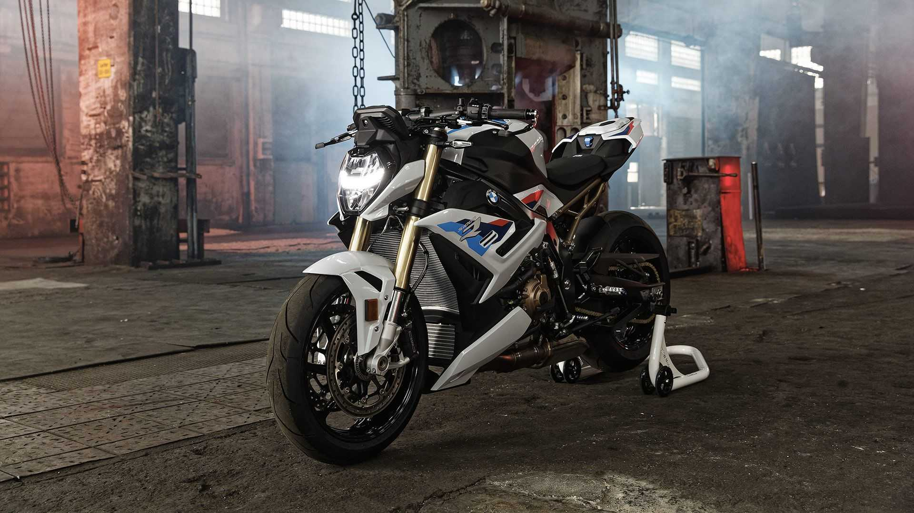
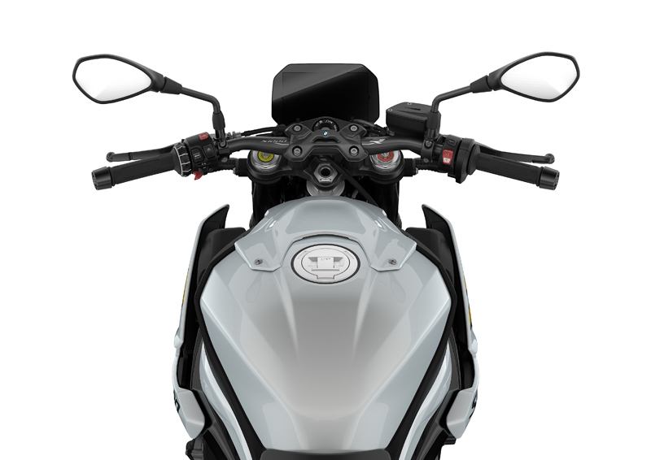

Engine

It would be simplicity itself for BMW to make its next-generation S1000R naked sports bike a rabid 200hp-plus monster but the firm has made the conscious decision not to take that route with the new 2021 version of the bike.
Rivals like Ducati’s Streetfighter V4 and MV Agusta’s Brutale 1000 have already passed the 200hp mark, but despite basing its all-new 2021 S1000R on the latest 207hp S1000RR superbike BMW has opted to keep its naked contender at the same 165hp as the previous version.
In fact, the bare numbers for the new model are remarkably similar to the outgoing one. Not only is the power the same at 165hp, but it’s reached at the same 11,000rpm peak, and the torque figure is also identical to before with 84lbft at 9250rpm. But don’t be fooled; BMW hasn’t simply carried over the old engine – the 2021 S1000R has the same detuned derivative of the latest S1000RR motor that appeared in the 2020 S1000XR.
That means the engine is shorn of its innovative ShiftCam variable valve timing system and reworked with a focus on torque and drivability. The naked bike’s peak torque is fractionally higher than the 83.3lbft maximum of the S1000RR and more significantly it arrives nearly 2000rpm lower in the rev range.
Chassis

It inherits the new beam frame from the latest S1000RR, which is designed to be lighter than the old one and offers a better balance of rigidity and flex. The new engine is also 5kg lighter than the old one, so despite having to meet Euro5 emissions limits, the 2021 S1000R is 6.5kg lighter overall than its predecessor at 199kg complete with a full tank of fuel. That’s before you dip into the options list, too, as the ‘M’ package is claimed to slash another 4.8kg from the total.
The result, in terms of outright performance, is the BMW says the 2021 S1000R can accelerate from 0-124mph in 8s flat, 5% faster than the old version, while offering better handling and improved comfort.
Electronic equipment

As we’ve come to expect, the 2021 comes with a bafflingly wide array of electronics to maximise its potential and the option to expand it even further by adding optional extras.
The base version gets three riding modes – rain, road and dynamic – and adding the ‘Riding Modes Pro’ option adds a programmable ‘Dynamic Pro’ setting as well as including adjustable engine braking and a tempting-sounding ‘Power Wheelie’ mode that controls how high the front wheel lifts before the six-axis IMU-controlled system cuts the power.
Similarly, there’s a hill-start control system as standard, with an adjustable ‘Pro’ version as an add-on option, and an up-down quickshifter can also be added as a factory-fit extra.
A ‘Headlight Pro’ option adds adaptive cornering lights, with extra LEDs that turn on in the direction of travel when you bank more than 7 degrees at speeds over 10km/h.
On-board, there’s a new 6.5in TFT instrument pack, borrowed from the RR, which includes Bluetooth connectivity via a dedicated app to give arrow-based navigation as well as all the usual readouts. You can also change its appearance, picking from the road-oriented ‘Pure Ride’ screen and two ‘Core’ screens that show details like bank angle, traction control usage, deceleration and lap times. The rev counter also automatically adapts its redline depending on engine temperature to make sure you don’t thrash the bike from cold, and there’s the option to add more kit like tyre pressure sensors.
.jpg)